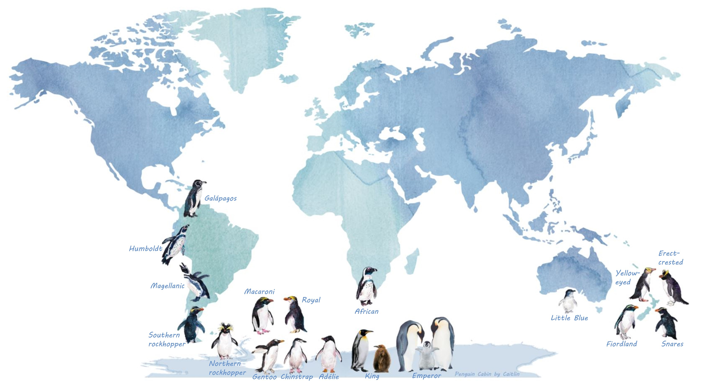
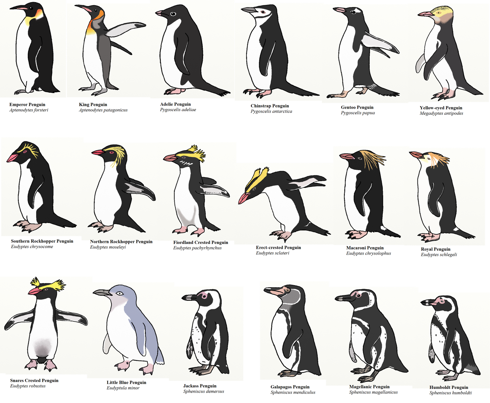
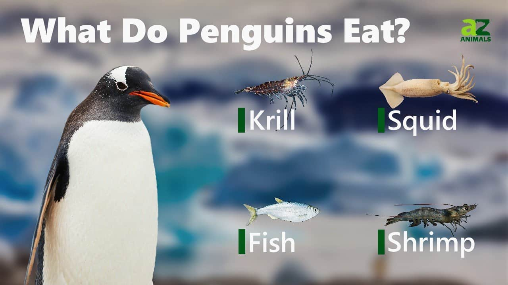

Pengunler Nasıl Canlılardır ?
Penguenler, Antarktika'nın soğuk sularında ve çevresinde yaşayan, uçamayan deniz kuşlarıdır. Karada sürünerek hareket ederler ve yüzme yetenekleri ile tanınırlar. Siyah-beyaz renklere sahip tüyleri, özellikle sualtı avlanmaları için mükemmel kamuflaj sağlar. Sosyal hayvanlar olan penguenler genellikle büyük koloniler halinde yaşarlar ve çoğunlukla buzullar üzerinde yuva yaparlar. Besinlerini genellikle balık ve kril gibi deniz canlılarından sağlarlar. Bazı türler, soğuk iklimlerde hayatta kalmalarını sağlayan kalın bir yağ tabakasıyla kaplıdır.

Penguenler Nerelerde Yaşar ?
Penguenler genellikle Güney Yarımküre'nin soğuk denizlerinde ve kıyılarında yaşarlar. Antarktika, Güney Amerika'nın güneyi, Güney Afrika'nın güneyi, Avustralya ve Yeni Zelanda gibi bölgelerde bulunabilirler. Bununla birlikte, bazı türler sıcak iklimlerde yaşamayı tercih eder ve ekvatorun yakınındaki adalarda bulunabilirler. Örneğin, Galapagos Adaları'nda Humboldt Penguenleri bulunur. Penguenler genellikle buzulların yakınında veya kıyı bölgelerinde büyük koloniler halinde yaşarlar ve genellikle yiyecek bulmaları kolay olan denizlerin yakınında tercih ettikleri kayalık veya çalılık alanlarda yuva yaparlar.

Kaç Çeşit Penguen Var ?
Dünya genelinde yaşayan on beş civarında penguen türü bulunmaktadır. Bu türler arasında İmparator Penguen, Kral Penguen, Adelie Pengueni, Macaroni Pengueni, Humboldt Pengueni, Magellanik Penguen ve Galapagos Pengueni gibi çeşitli türler bulunur. Her tür, genellikle yaşadığı coğrafi bölgeye özgü farklı özelliklere ve yaşam alanlarına sahiptir. Örneğin, Antarktika'nın soğuk sularda yaşayan İmparator Penguen büyük ve buzulların üzerinde yaşar, Kral Penguen Güney Amerika'nın soğuk denizlerinde bulunurken, Humboldt Pengueni Güney Amerika'nın daha sıcak iklimlerine adapte olmuştur.

Penguenler Nasıl Beslenir ?
Penguenler genellikle balık, kril, kalamar ve diğer deniz canlıları ile beslenirler. Su altında avlanırlar ve genellikle avlarını takip ederek su altında uzun mesafeler kat ederler. Gözleri su altında iyi görüş sağlar ve yüksek manevra kabiliyetleri sayesinde avlarını kovalayabilirler. Penguenler genellikle büyük gruplar halinde avlanır ve birlikte çalışarak daha fazla başarı elde ederler. Beslenme alışkanlıkları türlerine göre değişiklik gösterebilir ancak çoğunlukla balık, karides, kalamar ve karides gibi deniz canlıları yerler.

Penguenler Hakkında Muhtemelen Bilmediğiniz İlginç Bilgiler:
- İmparator penguenler suda 560 metreye kadar dalabilirler, bu o kadar derindir ki neredeyse o seviyede hiç ışık yoktur.
- Leyleklerin penguenlerin yaşayan en yakın akrabaları olduğu düşünülüyor.
- İmparator penguenler, çiftleşmeye ve karaya çıkmaya hazır olmadan önce 8 yıl denizde kalabilirler.
- Antarktika’da Adélie penguen kolonisinin de yaşadığı Ardley Adası 6.700 yaşında.
- Soyu tükenmiş dev penguen (colossus penguin) 2 metreden uzundu ve 110 kg ağırlığındaydı.
- Penguenlerin kan dolaşımı, kanatlarını aşırı soğuk tutacak şekilde ayarlanmıştır, böylece vücut ısısını korurlar ve ayakları üşümez.
- Penguenler, su altında gözlerine çarpan ışığın bükülmesini önleyen düzleştirilmiş kornealara sahiptir. Bu, penguenlerin su altında net bir şekilde görmelerini sağlayarak avlanmalarına ve avcılardan kaçınmalarına yardımcı olur.
- Adélie penguenleri, 500.000 yuvadan oluşan koloniler kurabilir. Bu 1 milyon yetişkin penguen demek!
- Çoğu kuşun aksine penguenlerin içi boş kemikleri yoktur.
- Penguenlerin dillerinde, balıkları tutmalarına yardımcı olmak için geriye dönük keratinden yapılmış sivri uçlar bulunur.
- Her iki penguen ebeveyni de ayrım olmaksızın yavrularına bakar.
- Denizde ayrı geçen bir kıştan sonra, penguen çiftleri çiftleşme çağrısı yoluyla birbirlerini bulup aynı yuvalama konumuna geri döner.
- Penguenler, suyu dışarıda tutan ve onları hidrodinamikleştiren, aşırı düzenli çok sayıda tüye sahiptir.
- Penguenlerin pembe dışkıları uzaydan görülebilir.